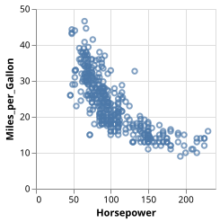
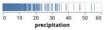
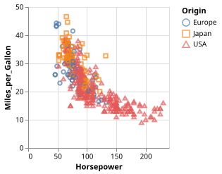
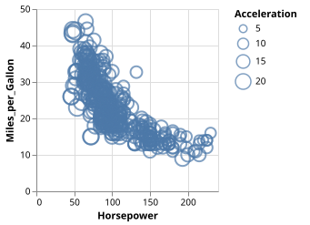
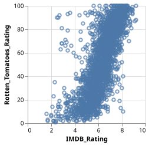
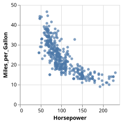
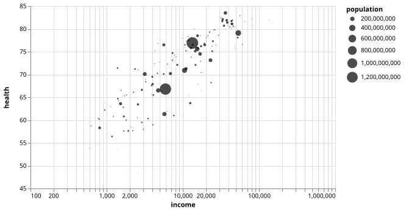
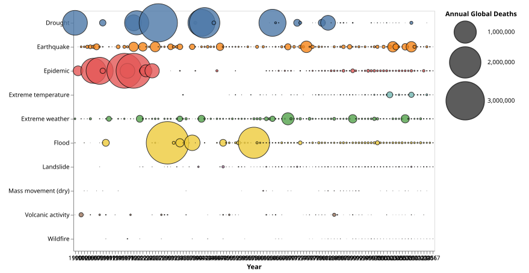
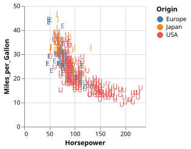

Scatter & Strip Plots
Scatterplot
using VegaLite, VegaDatasets
dataset("cars") |>
@vlplot(:point, x=:Horsepower, y=:Miles_per_Gallon)
Dot Plot
using VegaLite, VegaDatasets
dataset("seattle-weather") |>
@vlplot(:tick, x=:precipitation)
Strip Plot
using VegaLite, VegaDatasets
dataset("cars") |>
@vlplot(:tick, x=:Horsepower, y="Cylinders:o")
Colored Scatterplot
using VegaLite, VegaDatasets
dataset("cars") |>
@vlplot(:point, x=:Horsepower, y=:Miles_per_Gallon, color=:Origin, shape=:Origin)
Binned Scatterplot
using VegaLite, VegaDatasets
dataset("movies") |>
@vlplot(
:circle,
x={:IMDB_Rating, bin={maxbins=10}},
y={:Rotten_Tomatoes_Rating, bin={maxbins=10}},
size="count()"
)
Bubble Plot
using VegaLite, VegaDatasets
dataset("cars") |>
@vlplot(:point, x=:Horsepower, y=:Miles_per_Gallon, size=:Acceleration)
Scatterplot with NA Values in Grey
using VegaLite, VegaDatasets
dataset("movies") |>
@vlplot(
:point,
x=:IMDB_Rating,
y=:Rotten_Tomatoes_Rating,
color={
condition={
test="datum.IMDB_Rating === null || datum.Rotten_Tomatoes_Rating === null",
value="#aaa"
}
},
config={invalidValues=nothing}
)
Scatterplot with Filled Circles
using VegaLite, VegaDatasets
dataset("cars") |>
@vlplot(:circle, x=:Horsepower, y=:Miles_per_Gallon)
Bubble Plot (Gapminder)
using VegaLite, VegaDatasets
dataset("gapminder-health-income") |>
@vlplot(
:circle,
width=500,height=300,
selection={
view={type=:interval, bind=:scales}
},
y={:health, scale={zero=false}, axis={minExtent=30}},
x={:income, scale={type=:log}},
size=:population,
color={value="#000"}
)
Bubble Plot (Natural Disasters)
using VegaLite, VegaDatasets
dataset("disasters") |>
@vlplot(
width=600,height=400,
transform=[
{filter="datum.Entity !== 'All natural disasters'"}
],
mark={
:circle,
opacity=0.8,
stroke=:black,
strokeWidth=1
},
x={"Year:o", axis={labelAngle=0}},
y={:Entity, axis={title=""}},
size={
:Deaths,
legend={title="Annual Global Deaths"},
scale={range=[0,5000]}
},
color={:Entity, legend=nothing}
)
Scatter Plot with Text Marks
using VegaLite, VegaDatasets
dataset("cars") |>
@vlplot(
:text,
transform=[
{
calculate="datum.Origin[0]",
as="OriginInitial"
}
],
x=:Horsepower,
y=:Miles_per_Gallon,
color=:Origin,
text="OriginInitial:n"
)
Image-based Scatter Plot
using VegaLite, VegaDatasets, DataFrames
data=DataFrame(
x=[0.5,1.5,2.5],
y=[0.5,1.5,2.5],
#use the following code to reproduce on a local REPL:
# Construct the URL to the local example images with absolute paths:
# file:///C:/Users/username/.julia/packages/VegaDatasets/9E5lE/src/../data/data/ffox.png
# img=[
# "file:///"*replace(joinpath(joinpath(dirname(pathof(VegaDatasets)),"..","data"),"data","ffox.png"),"\\" => "/"),
# "file:///"*replace(joinpath(joinpath(dirname(pathof(VegaDatasets)),"..","data"),"data","gimp.png"),"\\" => "/"),
# "file:///"*replace(joinpath(joinpath(dirname(pathof(VegaDatasets)),"..","data"),"data","7zip.png"),"\\" => "/")
# ]
img=[
"../../assets/images/ffox.png",
"../../assets/images/gimp.png",
"../../assets/images/7zip.png"
]
)
data |> @vlplot(
mark={:image,width=50,height=50},
x="x:q",
y="y:q",
url={field=:img}
)